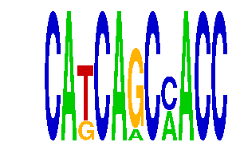

family_14 |
|---|
|  |
| Download PWM |
| Download instances (motifs) |
| Show motif distribution |
Query_ID | Query_Consensus | Subject_Name | Source_DB | Subject_ID | Length | Orientation | Offset | Divergence | Overlap | Subject_Consensus |
|---|---|---|---|---|---|---|---|---|---|---|
| family_14 | CATCAGCCACC | ZEB1 | JASPAR | MA0103.1 | 6 | as given | 7 | 0.636 | 4 | CACCTN |
Sequence | Start_position (from start) | Start_position (from end) | Average conservation | Best conservation score | Instance_with_best_CS | Best_Z-score | Instance_with_best_ZS | Strand |
|---|---|---|---|---|---|---|---|---|
| chr17:27009000-27012400 | 3321 | 3332 | 0.00981818 | 0.018 | CATCARCMACC | 12.745775 | CAKCAGCMACC | 1 |
| chr6:112344600-112347000 | 889 | 900 | 0.00345455 | 0.009 | CAKCAGCMACC | 20.949661 | CATCARCMACC | 1 |
| chr13:12119812-12125100 | 2592 | 2603 | 0.00654545 | 0.02 | CAKCAGCMACC | 12.745775 | CAKCAGCMACC | 1 |
| chr5:31864700-31868100 | 3030 | 3041 | 0.00109091 | 0.003 | CATCARCMACC | 12.745775 | CAKCAGCMACC | 1 |
| chr8:64155800-64156927 | 379 | 390 | 0.0557273 | 0.134 | CATCARCMACC | 20.949661 | CATCARCMACC | 1 |
| chr17:71371941-71374000 | 464 | 475 | 0.0568182 | 0.2 | CATCARCMACC | 12.745775 | CAKCAGCMACC | 1 |
| chr13:12411200-12421100 | 133 | 144 | 0.000909091 | 0.003 | CATCARCMACC | 20.949661 | CATCARCMACC | 1 |
| chr8:46682700-46684400 | 1016 | 1027 | 0.489364 | 0.937 | CAKCAGCMACC | 12.745775 | CAKCAGCMACC | 1 |
| chr7:148085400-148087600 | 931 | 942 | 0.235 | 0.314 | CAKCAGCMACC | 12.745775 | CAKCAGCMACC | -1 |
| chr8:46988000-46990100 | 1566 | 1577 | 0.000272727 | 0.002 | CATCARCMACC | 12.745775 | CAKCAGCMACC | 1 |
| chr1:75343200-75345100 | 1035 | 1046 | 0.00581818 | 0.012 | CAKCAGCMACC | 20.949661 | CATCARCMACC | -1 |
| chr18:11087950-11088950 | 288 | 299 | 0.0188182 | 0.031 | CAKCAGCMACC | 20.949661 | CATCARCMACC | 1 |
| chr8:46682700-46684400 | 1671 | 1682 | 0.00127273 | 0.013 | CATCARCMACC | 20.949661 | CATCARCMACC | 1 |
| chr16:91853000-91854900 | 1680 | 1691 | 0.00309091 | 0.01 | CAKCAGCMACC | 12.745775 | CAKCAGCMACC | -1 |